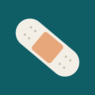

1组织类型 Tissue type 混合组织按最需要处理的那种选
2渗液量 Exudate
3是否感染 Infection
混合组织：按你要处理的那种组织选。例如伤口同时有腐肉和肉芽，就按 Slough 腐肉 那一组选。
有异味 Odour：考虑加用吸味敷料（活性炭 Charcoal / Carbon，含银或不含银）。
静脉性湿疹 Venous eczema：可使用氧化锌糊绷带 Zinc paste bandages。

Dressing CalculateWound Assessment → Dressing Selection · 选组织类型、渗液量、是否感染，直接给出主敷料和次敷料
中文为通用叫法，帮助理解类别；具体产品以单位库存和名称为准。